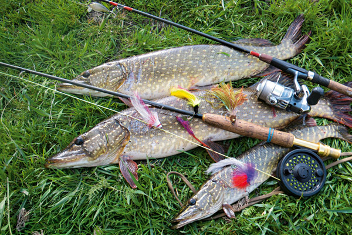

Загальна інформація
Протягом спекотного липня метаболізм риби у воді, що сягає максимальної річної температури, поступово падає, і це стосується не лише великих коропових, але й більшості хижаків. Щука, наразі триматиметься подалі від мілководних ділянок та полюватиме лише певну частину доби, а також стає все більш залежною від змін погодних умов. У цій статті ми розповімо про те, як поводить себе щука протягом середини літа, та у який засіб і за допомогою якої снасті її ловлять. Далі - детальніше!
Поведінка щуки протягом липня
Разом зі зростанням температури повітря, щука все менше часу приділятиме активному полюванню, проте значне підвищення її активності спостерігатиметься перед грозами та під час легких опадів, а також у хмарні прохолодні дні. У звичну для цієї пори, спекотну, погоду її невеликі екземпляри все ще можна зустріти поблизу берегу, де вони активно полюють на дрібну рибу, що припливає на мілководні ділянки погрітись та поласувати зоопланктоном. Тут, частина хижаків триматиметься щільних заростей рослинності, які надають їй можливість укриття та тінь. Загалом, щука найкраще реагуватиме на пропливаючу повз насадку саме протягом ранкової або вечірньої зорі. Більшу ж частину доби вона тримаються заглибин на твердому або піщаному ґрунті, продовжуючи полювати з засідки на пропливаючу повз, якомога більшу та легшу здобич, проте вже з дедалі меньшим азартом.
В цілому, поведінка щуки цієї пори року дуже мінлива, так само як і її вподобання. Протягом доби вона буде часто змінювати місця засідки, глибини та горизонти, загалом притримуючись придонного. Її активність буде сильно відрізнятись на озерах позбавлених приток, озерах із притоками та на річках, чим прохолодніше вода, тим більше шансів зустріти її біля берегу, чим швидше течії - тим більше шансів на зустріч із нею у спокійних водах. Найкращу допомогу на риболовлі може надати завчасна розвідка глибин на ділянці, яка збереже багато часу на пошуки найперспективніших ділянок для початку лову.